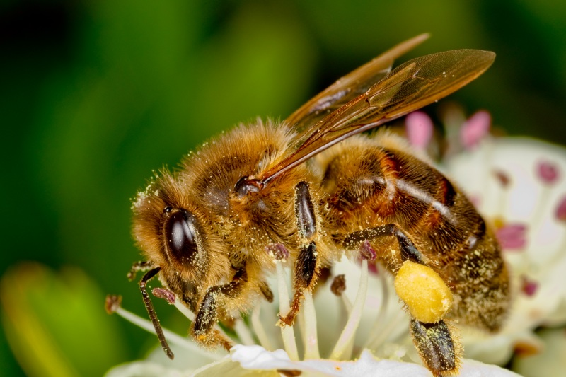
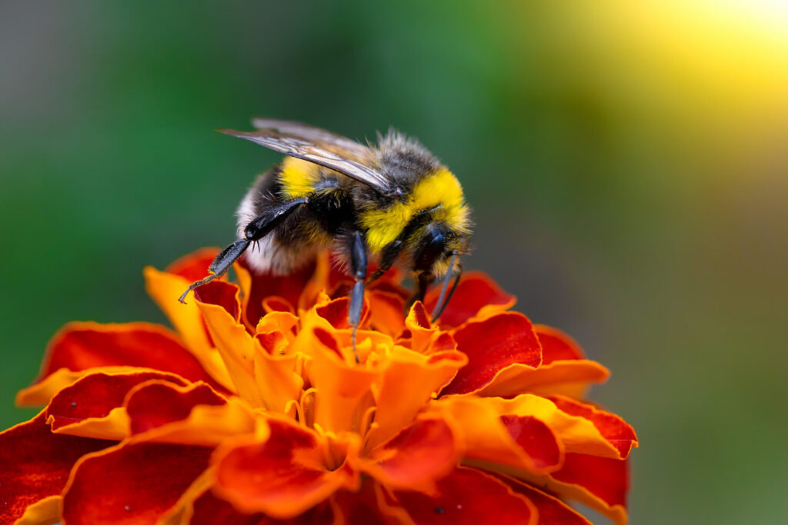
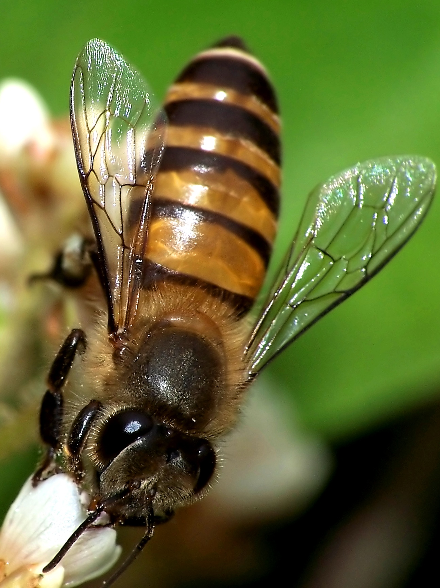
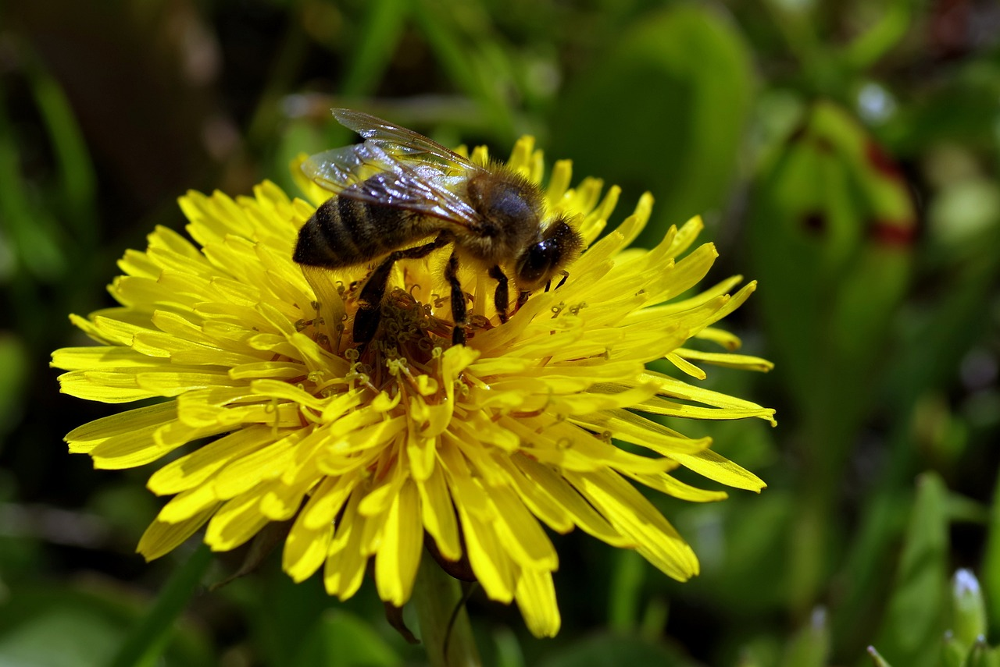
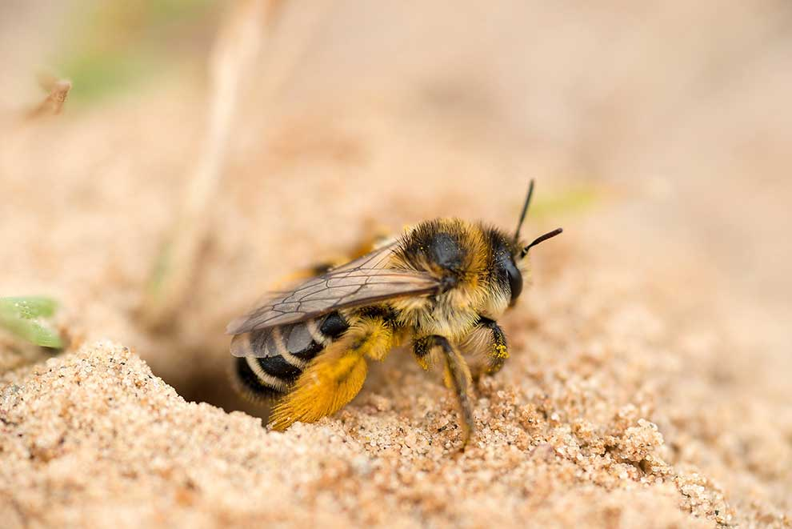

Pszczoła Miodna
Pszczoła miodna - jest to najbardziej znany i rozpowszechniony gatunek pszczół. Są hodowane przez człowieka dla produkcji miodu i innych produktów pszczelich.
Pszczoła Trzmielina
Pszczoła trzmielina - to rodzaj trzmieli, które są większe od pszczół miodnych. Pełnią istotną rolę w zapylaniu roślin, zwłaszcza w regionach o chłodniejszym klimacie.
Pszczoła Indyjska
Pszczoła indyjska - to gatunek,który jest ważnym zapylaczem roślin uprawnych i dziko rosnących w swoim obszarze występowania. Pszczoła indyjska jest też hodowana przez lokalnych rolników dla produkcji miodu i innych produktów pszczelich.
Pszczoła Błotna
Pszczoła błotna - to rodzaj pszczół samotniczych, które budują swoje gniazda z błota.
Pszczoła Ziemna
Pszczoła ziemna - to stosunkowo małe pszczoły, które w celu przetrwania budują swoje gniazda w ziemi.
